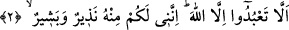
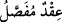
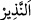
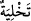
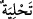

“Kitap” ilk olarak kendi zâtı bakımından yüce bir değere sahip olmakla
vasfedildikten sonra ikinci olarak Allah’a âid olmak bakımından vasfedilmiştir.
Hikmet sahibi ve her şeyden haberi olan, Allah Teâlâ’dır. İndirdiğini bir hikmete göre
indirir, emirlerine yönelenlerden de yüz çevirenlerden de haberdardır.
“sonra da güzelce açıklanmıştır.” Her iki inci arasına başka bir inci tanesi konularak
yapılan kolyeye Arapça’da “” denir. Yâni tıpkı kolyelerin tek tek taşlarla
süslenmesi gibi Kitab’ın âyetleri de bir takım faydalarla bezenmiştir. Yani akâid,
ahkâm, mev‘ıza, meseller gibi muhtelif maksadlara ve birbirinden ayrı mânâlara ayrılıp
açıklanmıştır.
“  ” harfi, aslında zaman bakımından sonralık ifade eder. Âyette ise bir zaman
” harfi, aslında zaman bakımından sonralık ifade eder. Âyette ise bir zaman
diliminde var olma ve meydana gelme bakımından bir sonralık değil, hüküm yani rütbe
bakımından bir farklılık ifade etmek içindir. Ya da vakit bakımından değil, haber verme
bakımından sonralık ifâde eder. Kitab’ın güzelce açıklandığının haber verilmesi,
sağlamlaştırılmış olduğunun haber verilmesinden hemen sonra gerçekleşmiştir. Ya da
haber vermede sonralık ifade eder. Önce Kur’an’ın muhkem kılındığı, sonra da
açıklandığı haber verilmiştir.
2. Tâ ki Allah’tan başkasına tapmayasınız. Şüphesiz ben de O’ndan size
(gönderilmiş) bir uyarıcı ve müjdeciyim.
“Tâ ki Allah’tan başkasına tapmayasınız.” Sanki şöyle buyrulmuştur: ‘Bu Kur’an
öyle bir kitaptır ki Allah’tan başkasına ibadet etmemeniz için, yani ey Mekkeliler
Allah’tan başkasına ibâdet etmeyi bırakıp sadece O’na ibâdet etmeniz için âyetleri
sağlamlaştırılmış, sonra da güzelce açıklanmıştır.’
Bu ifade, bu şerefli kitâbın maksadının sadece bu gayeyi (sâdece Allah’a kulluğu)
gerçekleştirmek olduğuna delâlet etmektedir. Bu bakımdan, ömrünü başka istekler
peşinde geçirenler ziyân eder ve hüsrâna uğrar.
“Şüphesiz ben de O’dan” Allah Teâlâ tarafından “size (gönderilmiş) bir uyarıcı ve
müjdeleyiciyim.” Bu söz, Allah Rasûlü (s.a.)’in lisâniyle söylenmiş bir sözdür. “İnkâr
ettiğiniz, yâni inkâra ve Allah’tan başkasına ibadet etmeye devam ettiğiniz takdirde
sizleri O’nun azâbından korkuturum; inandığınız takdirde de sevâbını müjdelerim.”
demektir.
“  (uyarıcı, korkutucu)” ifadesinin önce zikredilmesi, korkutmanın daha önemli
oluşundandır. Zira günah ve inkâr pisliklerinden arınmak (  ), îmân ve güzel huylarla
süslenmekten (  ) önce gelir.